千里之行，
始于足下
--路漫漫其修远兮，吾将上下而求索--

--路漫漫其修远兮，吾将上下而求索--
娇娇答应了毛毛要结婚后，毛毛就计划了整个行程，因为只能趁娇娇周五休息那个周末飞去拉斯维加斯，我们打算周四晚上直接开去丹佛机场附近，周五一早飞拉斯维加斯，周日上午飞回丹佛。但也许是上天对我们的考验吧，一路上一直遇上龙卷风和暴风雨，毛毛和娇娇都有点崩溃。不过娇娇表现地很淡定，还和闺蜜们直播现场情况。
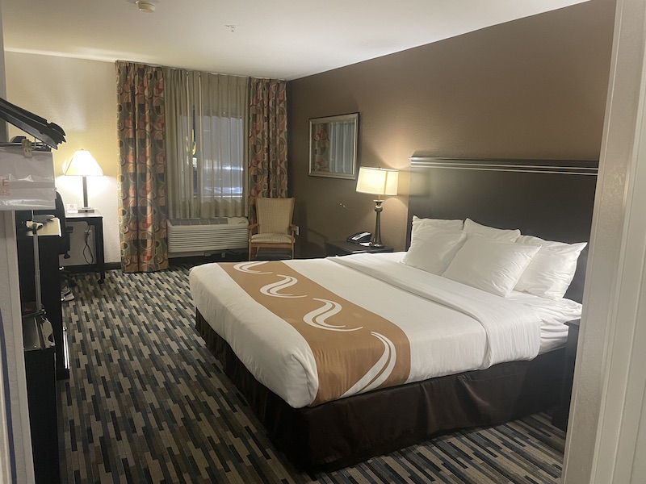终于战战兢兢地开了五小时夜车，我们十二点多才抵达了丹佛机场附近的宾馆，娇娇因为明天要先化好妆，所以我们洗了洗就直接睡了。要养精蓄锐，毕竟之后几天可能比较累。
今天起得很早，大概是结婚前夜比较紧张吧，也没睡着多久。七点多我们就来到了丹佛机场。但这时意料之外的事情发生了，我们的航班Frontier因为超售，我们被拒绝了登机。毛毛和娇娇从来没遇到过这类的事情，一时气愤地直跺脚。在和Frontier前台协商后，我们获得了他们的补偿，同时也决定马上改坐下午的航班。
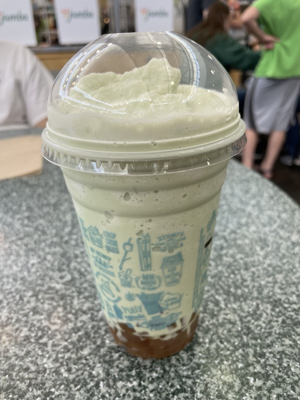在改签机票前，我们都事先和结婚教堂和摄影师确认周六下午是有空的，所以也算是不幸中的万幸吧，不然租车机票什么的都不能取消，不仅精神上会打击，财力上也会损失。于是我们就笃定地买了杯咖啡慢慢等。
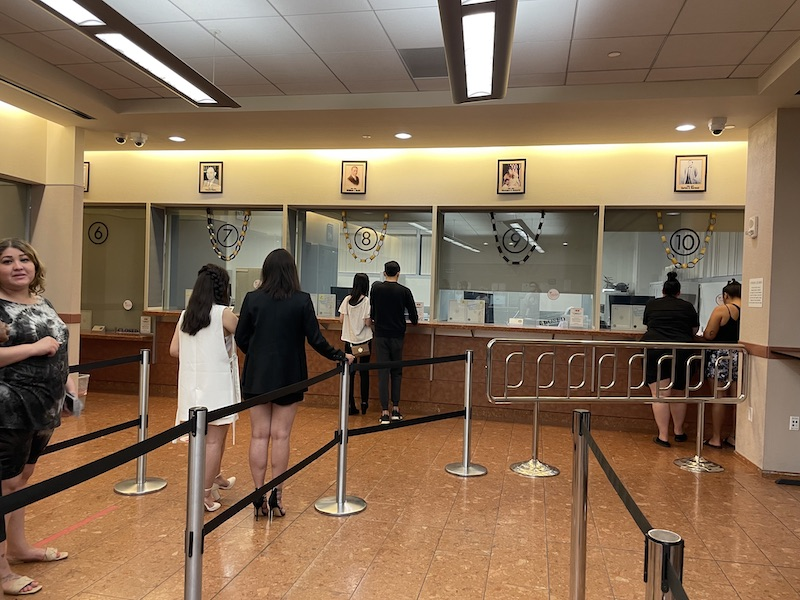当我们到达拉斯维加斯后，立马就拿了租车，直接驶向婚姻民政局。到的时候已经八点多了，进去后居然有很多人在排队。在我们前面看到了一对蕾丝也要领证。门外她们的好友也等着。
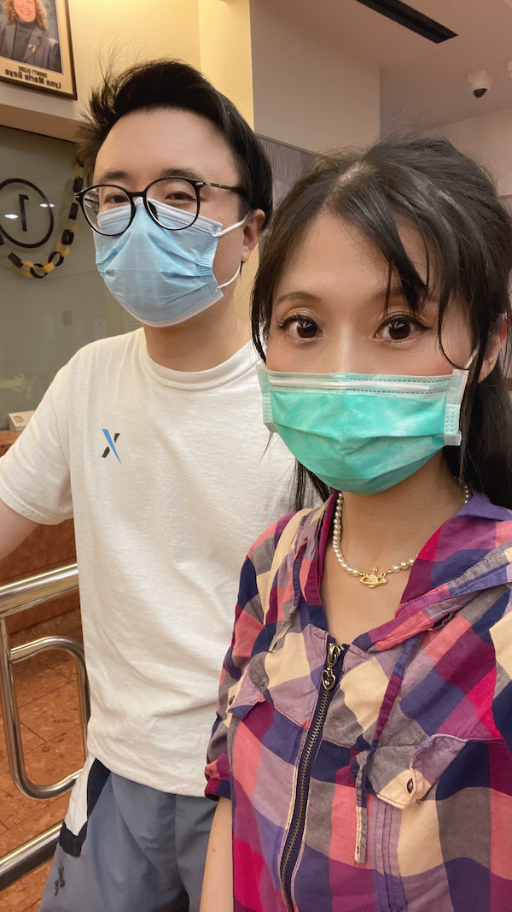那对蕾丝夫妇领完证后出门她们的朋友便一阵欢呼起哄，我们也感受到了这份热情。毕竟疫情期间能冒着风险来拉斯维加斯领证的，应该感情都很深吧。马上轮到毛毛和娇娇了，娇娇大概也是紧张，就拍了个自拍。
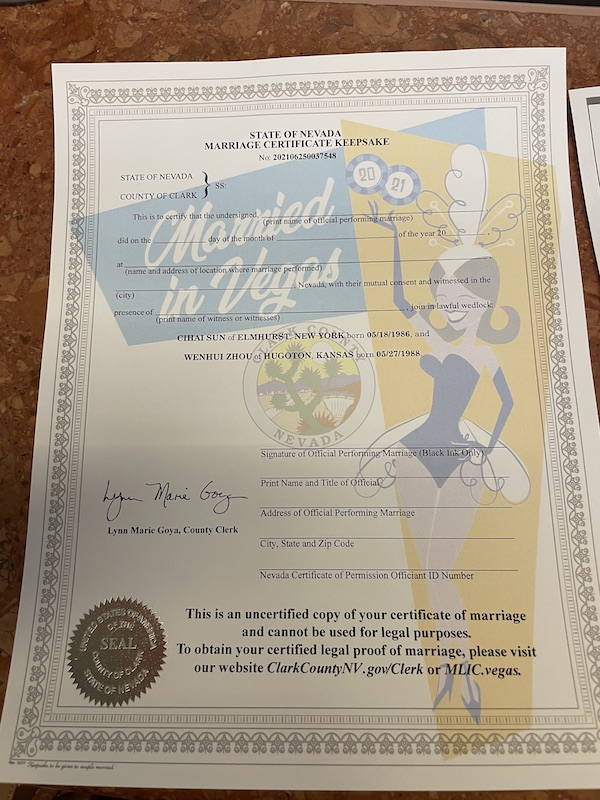帮我们办理的是个黑人小姐姐，他耐心地帮我们介绍了整个流程，包括我们需要在拉斯维加斯举行婚礼，在牧师的见证下才能算正式完成婚礼，还让我们选了结婚申请证的样板。我们就选了这个带拉斯维加斯特色的兔女郎的样板，哈哈。也算是纪念吧。
领完了结婚申请证后，毛毛便带娇娇去试婚纱。在飞机上，毛毛就说原本计划是没时间穿婚纱的，但现在计划的变更，让我们有时间穿婚纱了。毕竟教堂从网上看也很好看，不穿婚纱太可惜了。娇娇经不起毛毛的软磨硬泡，就答应了去试婚纱。试了两个小时后，我们终于选定了中意的一款啦。
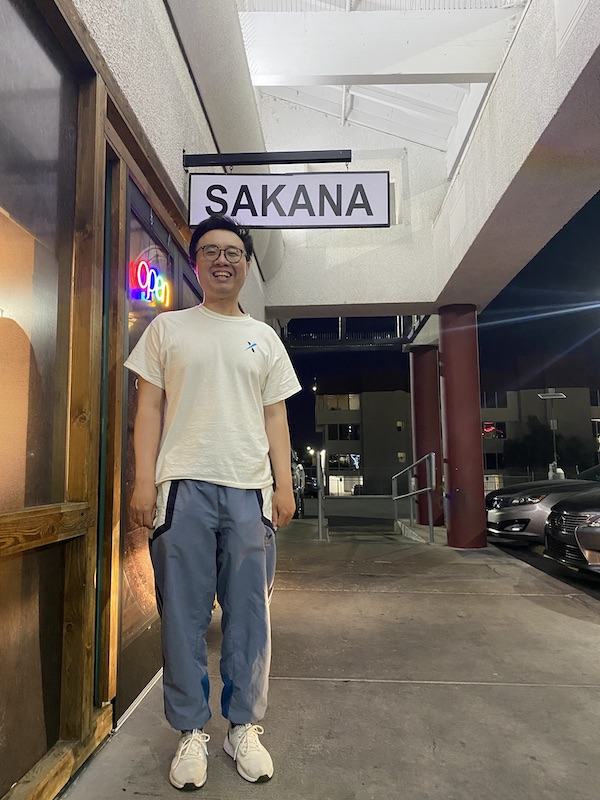挑完婚纱后，已经快十点多了，今天一天其实因为各种波折，没怎么好好吃饭。在拉斯维加斯，怎么能忘了sakana呢！毛毛和娇娇再次来到了sakana，看到熟悉的招牌，毛毛笑得嘴都合不拢了。
在永利这样的高端五星级酒店醒来是什么体验呢，就是很神清气爽。唯一有丢丢小遗憾的是，昨晚很晚才到了宾馆，所以我们总的呆在酒店的时间就少了很多。一早毛毛就趁机剪了个头发，娇娇就呆在酒店化妆。
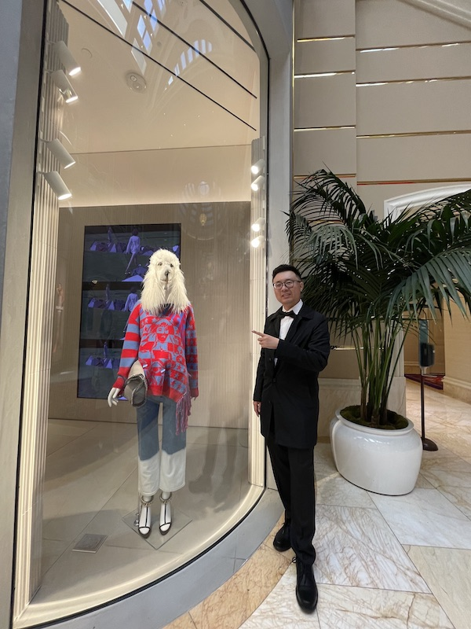毛毛和理发阿姨打了招呼，说今天要结婚的，于是阿姨就剪了个帅气的发型。回到酒店后，毛毛就和娇娇下去拍照片。佛要金装，人要衣装。看这张毛毛得意洋洋的样子。
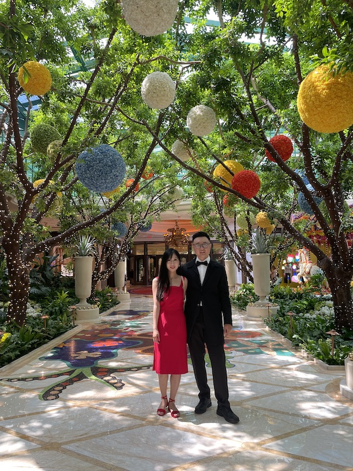在永利的大堂，我们遇到了很多好心人，会主动给我们拍照，娇娇穿了件红衣裙，十分动人。
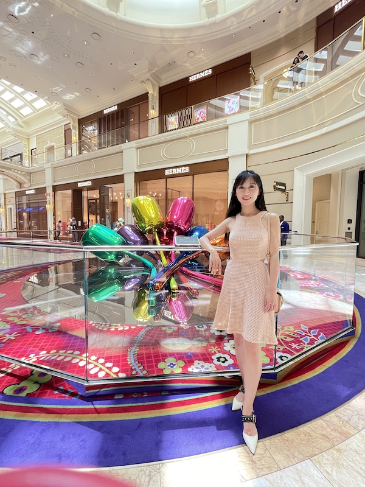为了留下更多的回忆，娇娇还特地再换了件粉红的小裙子，毛毛也是忙着拍照拍得不亦乐乎。永利下面好看的地方很多，感觉时间真的不够用。。
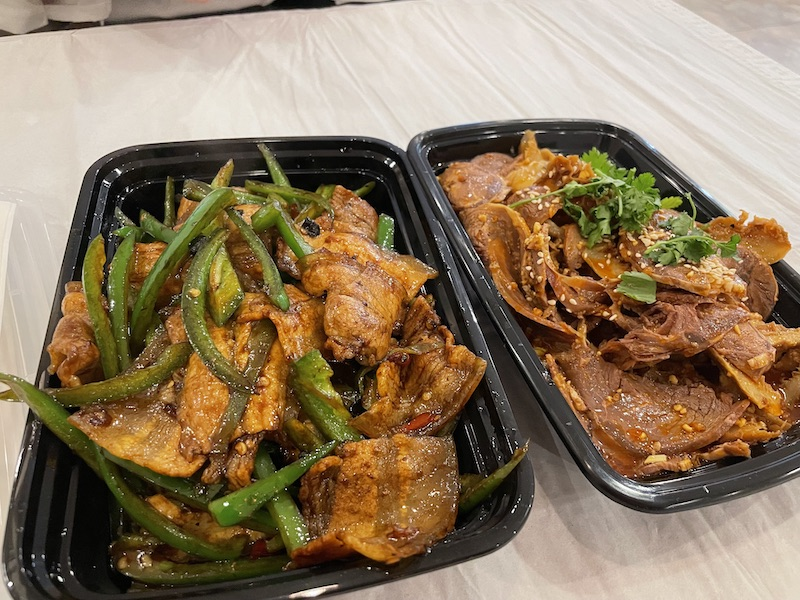因为必须在十二点前离开宾馆，我们收拾了下就先去教堂附近吃了个中餐。娇娇点了最喜欢吃的肥肠。毛毛怕辣油溅到白衬衫上，全程都小心翼翼地吃着饭。当然，这也是婚礼前最后的准备时间了，还是有点小紧张的呢。
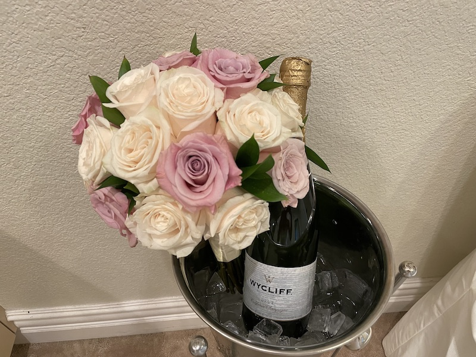来到了婚礼教堂Sunset Garden，和接待人员确认了后，她们把我们带到了准备室。捧花和香槟已经静静地等候多时了。
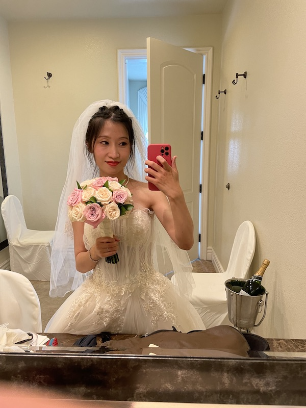虽然昨晚婚纱店老板娘叮嘱毛毛怎么帮娇娇穿婚纱，但在现场，毛毛还是不会系带子。于是拜托了牧师，终于过了好一会儿，娇娇穿好了婚纱，美美地拍了个自拍。
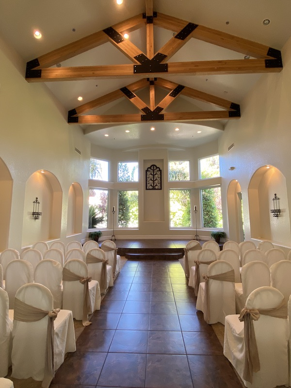接着来到了举行仪式的礼堂。之前就在网站上看到过，非常喜欢白色风格的典雅气息的氛围，现场看到还是觉得很激动的。
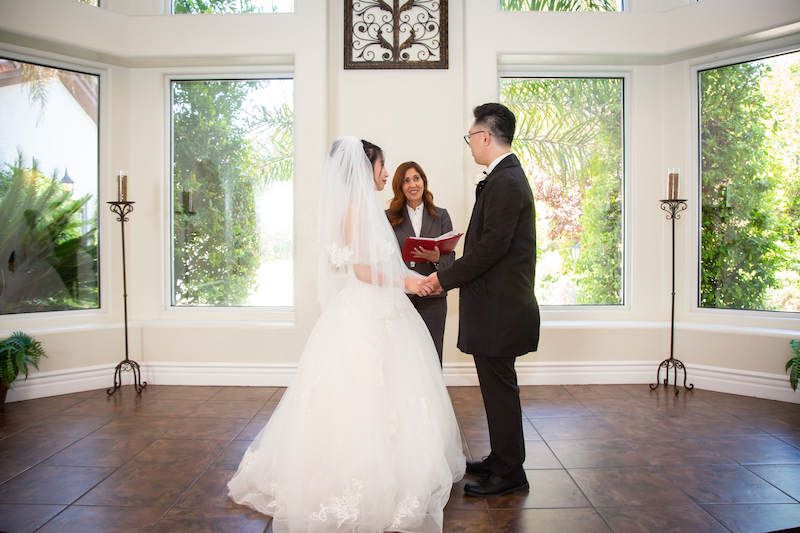接着在摄影师的指导下，我们缓步走入殿堂，在牧师的见证下，毛毛和娇娇念了誓词，交换了戒指。毛毛想到一路上这么艰辛终于修成正果，于是眼眶一热，潸然泪下。娇娇看到毛毛流下了眼泪，感动地帮毛毛擦拭了泪水。两个人幸福地拥吻。
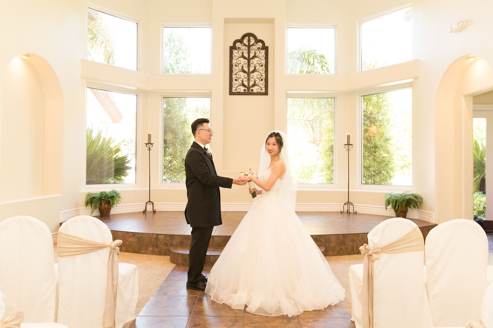仪式办完之后，我们就跟着摄影师摆各种姿势拍结婚照了，这张是毛毛在礼堂里很喜欢的照片之一。
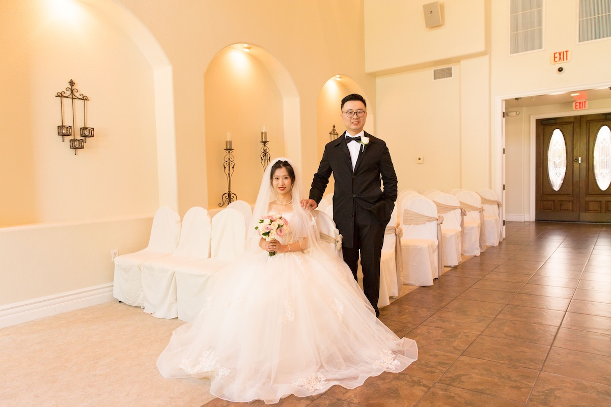这张以礼堂座位为背景的照片，站位和神态都很好，毛毛也很喜欢，可惜还在疫情期间，如果不是的话，应该会有亲朋好友会参加的吧。
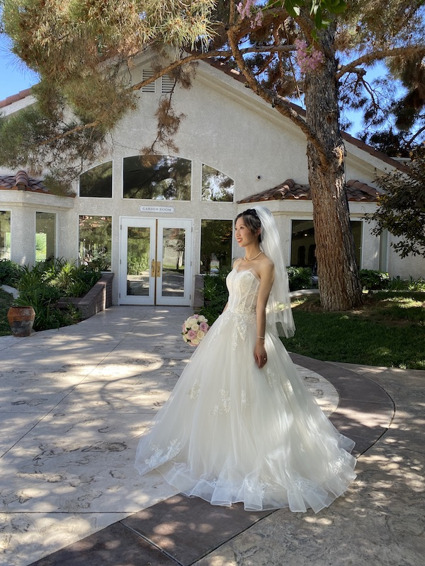然后是室外照片，当天拉斯维加斯气温高达42度，娇娇穿着婚纱，感觉要热死了。摄影师也是很敬业，跟拍了很多照片。
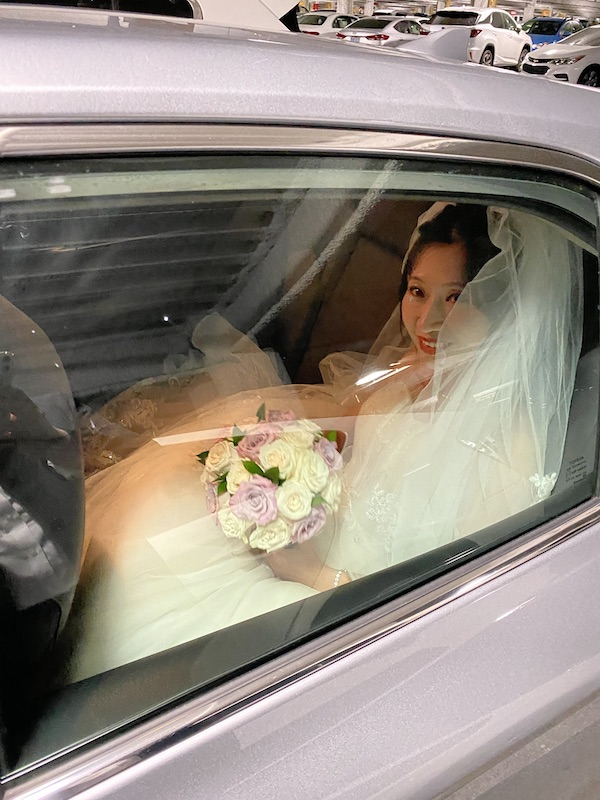终于在教堂拍完了所有照片，毛毛就想说再带着娇娇我们自己去室外拍点照片，不然难得这么好看的婚纱，不多拍点也说不过去。在车窗外，留下了这张照片，彷佛在国内接新娘子的流程场景。
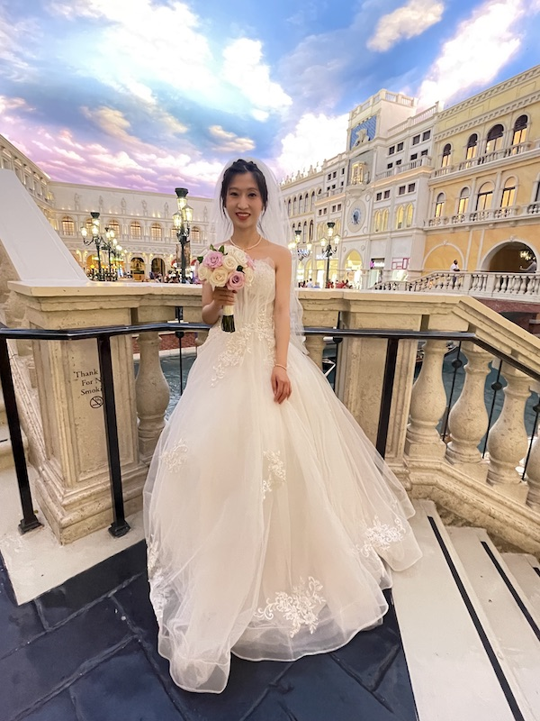于是我们再次来到了威尼斯人，一路上的游客看到我们都纷纷表示祝福，美丽的娇娇也一直吸引着很多人的目光。有位小姐姐非常主动地帮我们拍了很多照片，还教了我们很多姿势怎么摆。在威尼斯人景点旁，毛毛拍了张美美哒的照片。
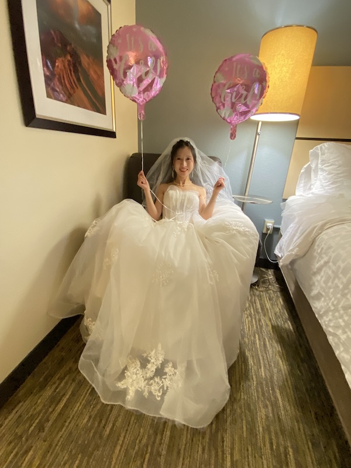回到宾馆，感觉累趴了，娇娇婚纱也穿不动了。在脱下婚纱前，拿了毛毛早上特地去买的气球摆拍了下。
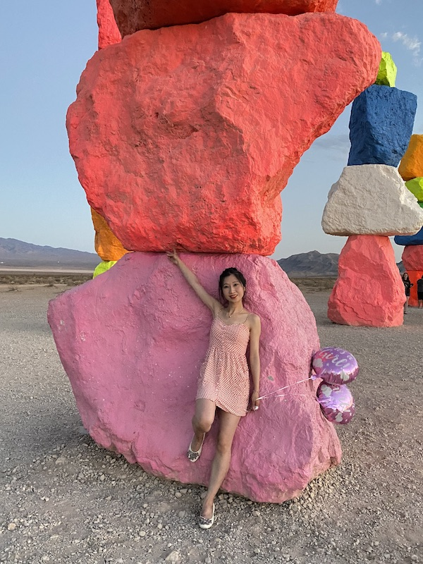之前娇娇查到个彩虹石头，也在拉斯维加斯，一直很想去。虽然我们今天很累，但娇娇的心愿还是要完成下的。趁天黑前，我们顺利地打卡了彩虹石头。恰恰恰。
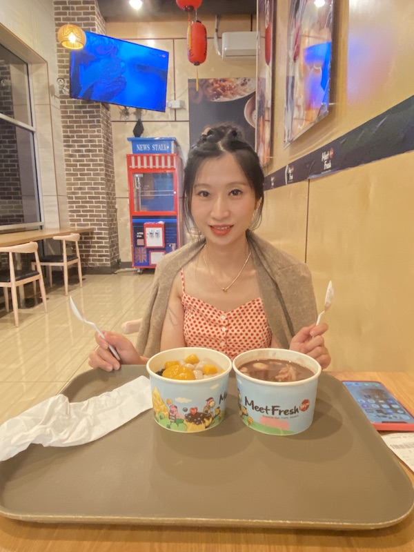去婚纱店还了婚纱，已经是晚上九点半，劳累的一天，想起了娇娇心心念念许久的芋圆仙。真完美，就算是吃夜宵了吧。还能吃上热乎乎的呢。
一大早我们就坐返程飞机回到了丹佛。坐上了金角大王，毛毛提议吃顿好的，于是我们查了下附近的，想吃有松鼠鱼的中餐馆，结果到了后发现餐馆老板其实已经换了，哈哈，挂羊头卖狗肉。
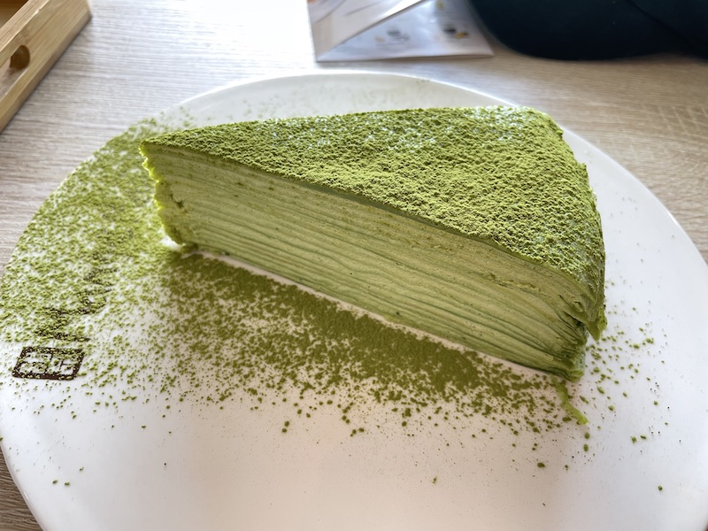吃完了午饭，我们想着再吃点甜点再回去。本想查丹佛还有没有芋圆仙，结果找到了一家店，里面有山寨版的Lady M。真的是发现了宝藏！
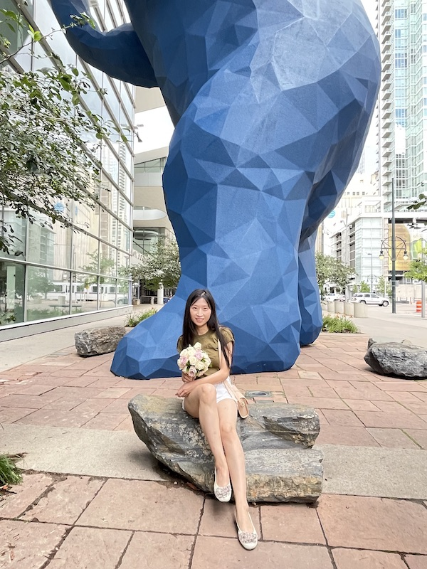在离开丹佛前，我们打开了蓝色大熊，上次有点匆忙没来成，这次也算是完成了心愿。娇娇拿着婚礼的捧花也笑得很开心。